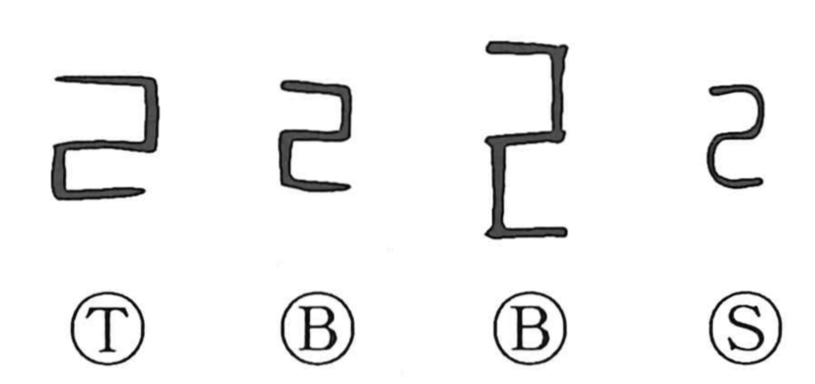

己

Kun: onore, tsuchinoto | On: ki, ko
self ・ oneself ・ sixth heavenly stem
Explanation
Originally a pictograph, this character depicts an instrument shaped like a right-angled ruler that likely served both for measuring and as a reel for winding thread. This functional image lives on in the character 紀, where the thread radical joins 己 to show thread being wound onto a spool, from which arise the senses of putting things in order—hence “to govern” and “law.” The common sense “self” is not primary but a later phonetic loan based on the character’s sound, and the same loan usage accounts for its role in writing tsuchinoto, the sixth of the Ten Heavenly Stems.